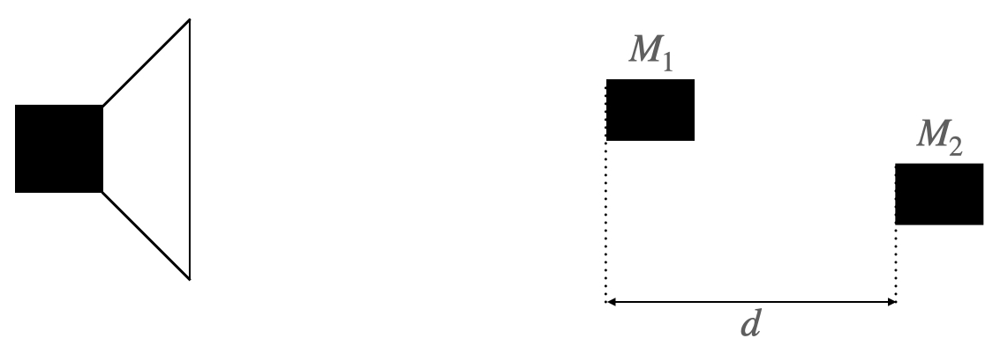
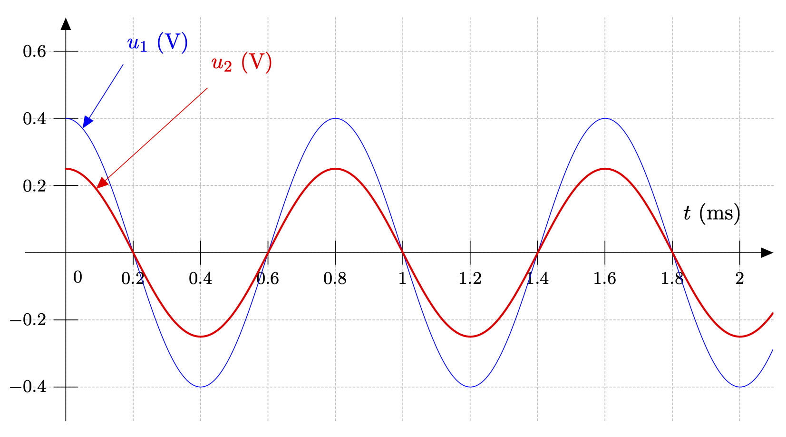
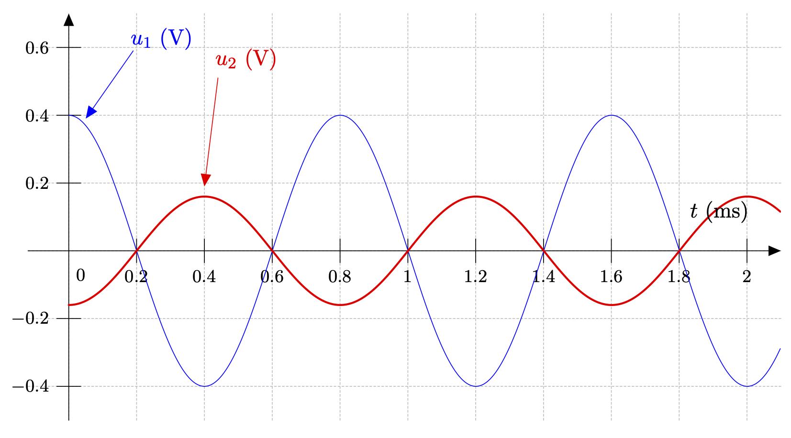
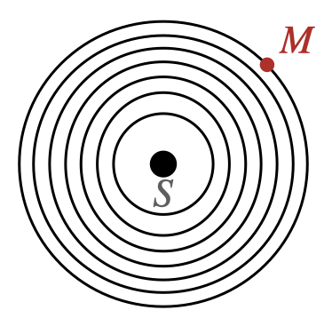

Deux élèves, lors d’une séance de travaux pratiques, réalisent l’expérience suivante. Ils branchent un générateur basse fréquence délivrant une tension sinusoïdale aux bornes d’un haut-parleur. À l’aide de deux microphones identiques reliés à une carte d’acquisition, ils visualisent les signaux électriques $u_1 (t)$ et $u_2 (t)$ produits lors de la réception du son (figures 1 et 2). Les deux microphones $M_1$ et $M_2$ sont séparés par une distance $d$.
Schématisation du montage  Figure 1  Figure 2 
Donnée
La vitesse du son dans les conditions de l’expérience est de $\pu{340 m/s}$.
- Quelle est la période du son émis par le haut-parleur ? En déduire sa fréquence.
Réponse
- $T = \pu{0,8 ms}$.
- Comme $f = \dfrac{1}{T}$, $f = \dfrac{1}{\pu{0,8e-3 s}} = \pu{1,25e3 Hz} = \pu{1e3 Hz}$.
- Calculer la longueur d’onde du son émis par le haut-parleur.
Réponse
Puisqu’il s’agit d’une onde sinusoïdale, $\lambda = v T$.
A.N. $\lambda = \pu{340 m/s} \times \pu{0,8e-3 s} = \pu{0,272 m} = \pu{0,3 m}$
- Sur la Figure 1, les signaux sont-ils en phase ? Justifier la réponse. Que peut-on dire de la distance $d$ séparant $M_1$ et $M_2$ ?
Réponse
-
Sur la figure 1, on constate que les états vibratoires du milieu en $M_1$ et $M_2$ sont identiques puisque les valeurs des tensions, images des tranches d’air au niveau des microphones, sont maximales (ou minimales, ou nulles, ou …) en même temps. Les signaux sont en phase.
-
Puisque les états vibratoires sont identiques, on en déduit que les points $M_1$ et $M_2$ sont séparés dans l’espace d’une distance $d$ égale à un nombre entier de longueurs d’onde $\lambda$.
Rappel
La longueur d’onde est la période spatiale. Après un déplacement dans l’espace de $\lambda$ mètres, on retrouve, dans le milieu, le même état vibratoire.
Les élèves éloignent le microphone $M_2$ afin d’obtenir pour la première fois les deux courbes de la Figure 2. Ils cesse alors de déplacer $M_2$.
- Quels renseignements permettent d’affirmer que $M_1$ n’a pas été déplacé et que $M_2$ est plus loin du haut-parleur que lors de la première acquisition ?
Réponse
L’amplitude du signal capté par $M_1$ n’a pas varié, tandis que celle du signal capté par $M_2$ a diminué. $M_1$ est donc resté immobile et $M_2$ a reculé (puisqu’on sait que l’intensité d’une onde diminue au cours de sa propagation).
- Les signaux électriques $u_1 (t)$ et $u_2 (t)$ sont-ils en phase ? Justifier la réponse.
Réponse
- Les signaux ne sont plus en phase puisque lorsque $u_1$ est maximale $u_2$ est minimale. Ils ne traduisent plus le même état vibratoire au niveau de $M_1$ et de $M_2$.
- En fait, les signaux sont en opposition de phase : ils traduisent des états vibratoires opposés.
- La distance d séparant $M_1$ et $M_2$ a augmenté de $\pu{13,6 cm}$. Cela confirme-t-il le résultat de la question 2) ?
Réponse
- Puisque les signaux sont en opposition de phase, le retard $\tau$ est égal à $\tau = \dfrac{T}{2}$.
Le retard est égal à une demi-période. - Pendant $T/2$ secondes une onde parcourt $\lambda / 2$ mètres. La distance $d’$ est donc telle que $d’ = d + \dfrac{\lambda}{2}$.
- On sait que $\lambda = \pu{0,272 m}$ et $d’ - d = \pu{13,6 cm} = \pu{0,136 m}$. On vérifie bien que $\dfrac{ \pu{0,136 m} }{ \pu{0,272 m} } \approx \dfrac{1}{2}$.
Aspect mathématique
On peut modéliser mathématiquement une onde sinusoïdale se propageant depuis une source $S$ et atteignant un point quelconque $M$ de l’espace par la fonction $s$1 à deux variables, appelée élongation de la vibration, telle que $$s(M,t) = A \cos(\dfrac{2\pi}{T}(t-\tau) + \varphi)$$ 
- $A$ est l’amplitude de l’élongation. Par définition, $A > 0$ ;
- $T$ est la période temporelle de l’onde ;
- $\tau$ est le retard de l’onde au point $M$ ;
- $\varphi$ est la phase à l’origine.
- $\dfrac{2\pi}{T}(t-\tau) + \varphi$ est la phase de l’onde en $M$.
L’objectif de cette partie est de comprendre l’influence de chacun des paramètres.
- Deux courbes $s_1$ et $s_2$ apparaissent à l’écran. L’une d’entre elles représente le mouvement du point $M$ atteint par l’onde, donc $s(M,t)$ tandis que l’autre représente le mouvement de la source $S$, donc $s(0,t)$.
Mettre en œuvre un raisonnement permettant d’attribuer chaque courbe aux mouvements des points $M$ et $S$.
Remarque : Afin de ne pas trop vous aider, je n’ai pas pris en compte l’atténuation du signal au cours de sa propagation dans ma simulation. 😇 🤷🏻♂️
Réponse
La notion de retard n’a aucun sens au niveau de la source $S$, donc si on fait varier $\tau$ la courbe qui se déplace est celle représentant $s(M,t)$.
La courbe verte est $s(M,t)$.
- Modifier les valeurs de $A$. Quelles sont les valeurs extrêmes de $s(M,t)$ ?
Réponse
- Puisque quel que soit l’angle $\alpha$, $-1 \leq \cos (\alpha) \leq 1$, $-A \leq A \cos (\alpha) \leq A$ et $-A \leq s(M,t) \leq A$.
- Faire varier la valeur de $T$ et vérifier qu’elle correspond bien à la période de l’onde.
Réponse
Lorsqu’on fait varier $T$ la courbe se contracte ou se dilate horizontalement, ceci correspond bien à la période du signal.
- Modifier $\tau$ et bien comprendre en quoi il traduit le retard de l’onde au point $M$. En particulier, pourquoi le signal se déplace-t-il vers la droite lorsqu’on augmente $\tau$ ?
Réponse
Lorsqu’on augmente la valeur du retard le signal se déplace vers la droite pour bien mettre en évidence le fait que l’information arrive plus tard dans le temps.
- En se rappelant que $\tau = \dfrac{r}{v}$, où $r$ est la distance $SM$ et $v$ la célérité de l’onde, montrer qu’on peut écrire la fonction $s$ sous la forme : $$s(M,t) = A \cos(\dfrac{2\pi}{T}t - \dfrac{2\pi}{\lambda}r + \varphi)$$
Réponse
Comme $\tau = \dfrac{r}{v}$, $$ \begin{aligned} s(M,t) &= A \cos(\dfrac{2\pi}{T}(t-\tau) + \varphi) \cr &= A \cos(\dfrac{2\pi}{T}(t-\dfrac{r}{v}) + \varphi) \cr &= A \cos(\dfrac{2\pi}{T}t - \dfrac{2\pi}{T}\, \dfrac{r}{v} + \varphi) \cr &= A \cos(\dfrac{2\pi}{T}t - \dfrac{2\pi}{vT}\,r) + \varphi \cr &= A \cos(\dfrac{2\pi}{T}t - \dfrac{2\pi}{\lambda}\,r + \varphi) \end{aligned} $$ Cette expression fait apparaître la double périodicité (spatiale et temporelle).
- Pourquoi appelle-t-on $\varphi$ la phase à l’origine ?
Réponse
Lorsqu’on pose $t=0$ et $r=0$, $s(0, 0) = A \cos(\varphi)$.
-
Ne surtout pas apprendre par cœur cette expression !!! ↩︎